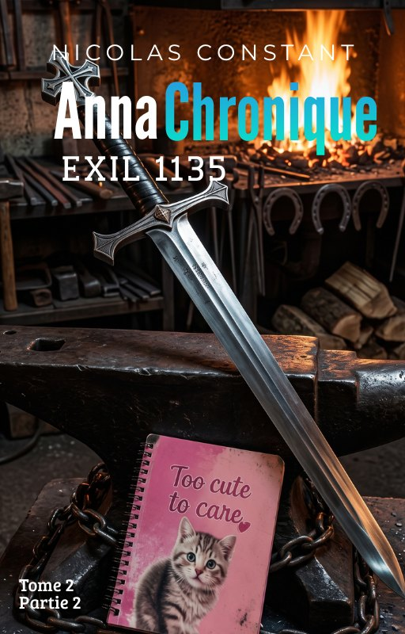

Exil 1135
Des voyageurs du XXIe siècle se retrouvent dans le Périgord féodal. Il faut survivre, se faire accepter, et comprendre les règles d'un monde où le rang et le lignage décident de tout.
Tomes 1 à 3, en deux parties chacun
Trois cycles : Exil 1135, The Truth Seekers et Mathilde. Survole un livre pour le sortir de l'étagère.
 AnnaChronique
AnnaChronique
 AnnaChronique
AnnaChronique

AnnaChroniqueDes voyageurs du XXIe siècle se retrouvent dans le Périgord féodal. Il faut survivre, se faire accepter, et comprendre les règles d'un monde où le rang et le lignage décident de tout.
Tomes 1 à 3, en deux parties chacun
Le deuxième cycle de la saga.
Résumé à ajouter avec l'auteur
À venirLe destin de Mathilde, camériste de Dame Isabelle et sœur aînée de Marie.
Après le sac de Saint-Marcel, sa fuite avec le Carnet Rose donne naissance à une lignée qui pèsera sur l'avenir de Périgueux.
Chaque tome d'Exil 1135 est publié en deux parties. La fin de la partie 1 n'est pas la fin du livre : la partie 2 reprend exactement là où tu t'es arrêté.
Où trouver le livre« Vous maniez ce hêtre comme un paysan sa houe au temps des semailles ! » Raoul le Jeune à Julien · Été 1135